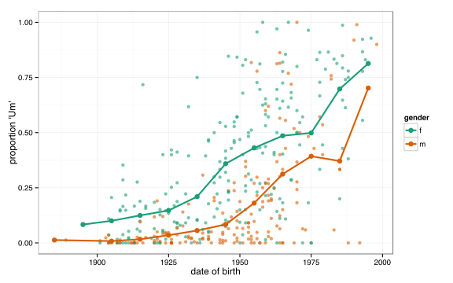
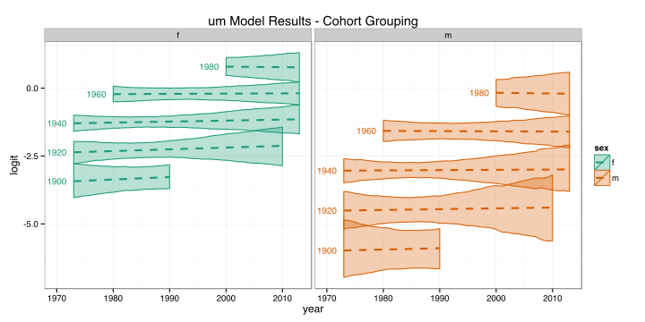
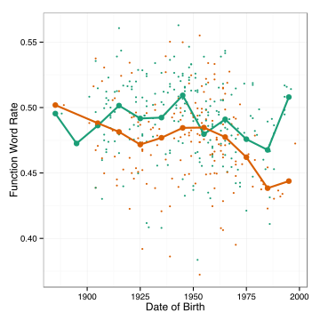
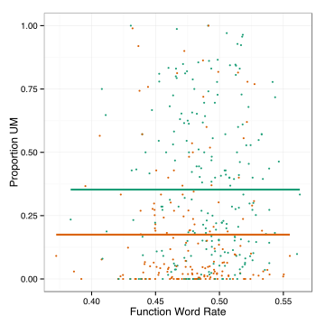
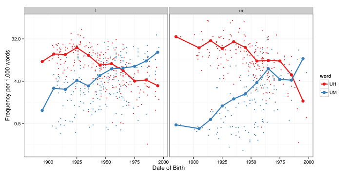
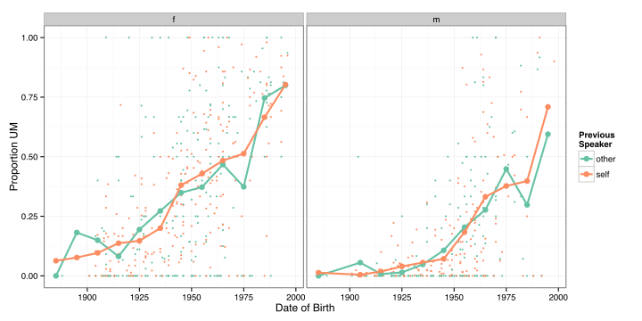
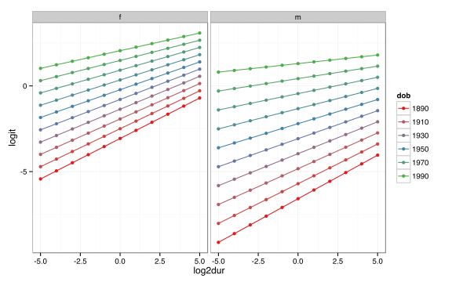

A “rule of grammar” (Labov, 1969).
Clark & Fox Tree (2002) summarize 3 perspectives:
UM tends to be associated with greater processing difficulty (longer following silence).
Tottie (2011), Acton (2011), Laserna, et al (2014)
Wieling, et al (forthcoming) have found apparent and real time changes towards more UM use in

| UH | UM | total |
|---|---|---|
| 19,123 | 6,391 | 25,514 |
I fit a 2 dimensional non-linear mixed effects logistic regression model.
um ~ s(dob, year) + (1|speaker)
Also D’Arcy (2012) on quoted thoughts and be like in NZE.
As a rough measure of utterance complexity, proportion of function words out of all words.


It looks like UM and UH are trading off in frequency

The change seems to be happening in all discourse contexts

In any given context, both UM and UH are licit, but one may be preferred.
There is a shift in in the frequency with which one of two equally licit variants is selected.
UM and UH are functionally differentiated to signal different messages.
There is a shift in the frequency of the message that is being communicated.
Under the changing messages hypothesis, the predictive power of the duration of following silences should be stable.
Under the changing usage hypothesis, its predictive power should decrease as speakers start using “um” more often irrespective of the context.

(UHM) does not behave like other vowel initial words with respect to phonologically conditioned allomorphy.
| a | apple | pear | (UHM) |
|---|---|---|---|
| [ə] | x | ✓ | 42 |
| [ən] | ✓ | x | 0 |
| [ei] | ? | ? | 112 |
Sociolinguistic variables exhibit very similar quantitative systematicity across multiple levels of language:
The nature of this systematicity may be best located outside of the formal properties of each of these systems, what Preston (2004) calls a “sociocultural selection device.”
Colleagues in allied fields of psycholinguistics are very interested in filled pauses, the effect they have on listeners, and how they fit into models of speech planning.